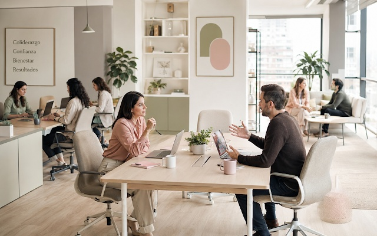

Independencia
Análisis sin intereses comprometidos.
Rigor, imparcialidad y confidencialidad
Investigaciones laborales externas e independientes, informes técnicos y peritaje social-laboral para organizaciones.
Sobre Ágora Laboral 360°
Somos una firma chilena especializada en investigaciones laborales externas, informes técnicos y peritaje social-laboral.
Integramos imparcialidad, perspectiva de género y resguardo del debido proceso. La evidencia orienta las conclusiones; el trato respetuoso protege a quienes participan.
Dirección profesional
Trabajadora Social. Magíster en Intervención Familiar y Magíster en Derecho de Familia.
Experiencia en coordinación de programas sociales y equipos de trabajo en el ámbito municipal.

Análisis sin intereses comprometidos.
Manejo responsable de antecedentes.
Lectura contextual de la evidencia.
Cada decisión queda documentada.
Método Ágora
La metodología ordena el trabajo, reduce ambigüedades y permite comprender cómo se alcanzó cada conclusión.
Delimitación del encargo, hechos y antecedentes relevantes.
Entrevistas, revisión documental y registro del proceso.
Valoración crítica y contextual de la información obtenida.
Hallazgos y conclusiones técnicas claramente documentadas.
Escuela de Investigadores Laborales
Programas prácticos sobre entrevistas, evidencia, perspectiva de género, debido proceso y elaboración de informes.
Conocer la Escuela →Recursos Ágora
Estamos preparando plantillas editables y guías prácticas para apoyar el registro y la organización del trabajo. Conozca el primer kit y consulte por su lanzamiento.
Ley Karin · Kit práctico
Dirigido a personas encargadas de recibir y organizar antecedentes en organizaciones.
El alcance, los formatos y el precio se informarán cuando el kit esté disponible. Aún no está a la venta.
Consultar por el kitEvaluación técnica inicial
Cuéntenos qué necesita: una investigación, un informe, formación o información sobre los próximos recursos.